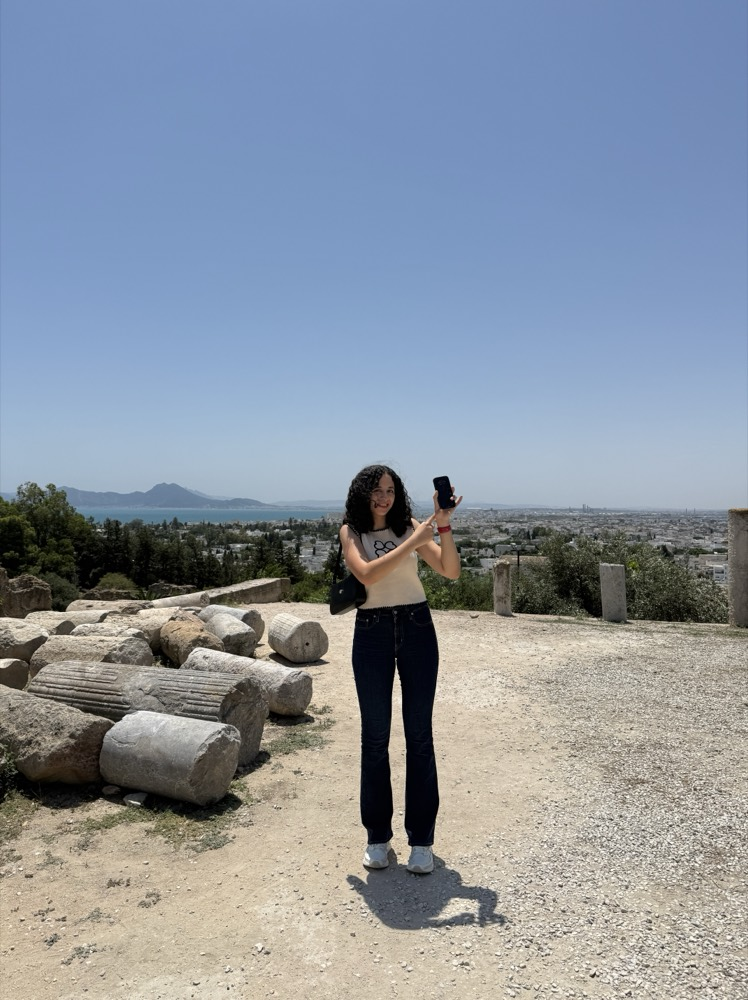

Tanit XR est un effort communautaire pour sauver le patrimoine tunisien du changement climatique, de l’érosion et de la négligence. Ensemble, nous bâtissons une archive numérique pour le protéger pour des générations.
Tanit XR opère sous le parrainage fiscal de Florida Community Innovation (FCI), organisation américaine à but non lucratif 501(c)(3). Ce partenariat nous permet d’accepter des dons déductibles des impôts pendant que nous grandissons vers une organisation pleinement indépendante.
Notre mission est de préserver le patrimoine tunisien en danger grâce aux numérisations, à la technologie immersive et à l’éducation. Avec chaque artéfact numérisé et chaque bénévole formé, nous prouvons que le patrimoine peut être protégé pour les générations futures — malgré les menaces du changement climatique et de la négligence.
Tanit XR fait progresser la cible 11.4 des Objectifs de développement durable, consacrée à la sauvegarde du patrimoine culturel et naturel. Nous voyons les ODD comme un cadre commun important pour relier l’action locale à l’impact mondial.
J’ai grandi en passant chaque jour devant les ruines de Carthage. Pour moi, elles étaient simplement là – le décor de mon enfance. Mais peu à peu, j’ai remarqué les morceaux manquants, les mosaïques fissurées qui s’effritaient, l’absence de véritable protection. L’histoire de la Tunisie n’est pas conservée dans des coffres ou des musées gardés. Elle est laissée à l’air libre, vulnérable au temps, aux intempéries et à la négligence. Et chaque année, une part de plus disparaît.
Tanit XR est née de la peur de perdre cette histoire à jamais et de la conviction que la technologie peut changer le récit. Grâce à la numérisation 3D, à l’archivage numérique et à la narration immersive, nous pouvons préserver ce qui reste et le partager avec le monde. Chaque numérisation est plus que des données : c’est une mémoire, une voix du passé, une façon de dire : nous étions là, et nous comptons.
– Ines Said, Fondatrice

Pas besoin d’être archéologue ou technologue pour avoir un impact. Nos premières numérisations ont été faites avec un téléphone. Sur le terrain en Tunisie ou à distance, chaque bénévole contribue à préserver l’histoire.
Bénévolat